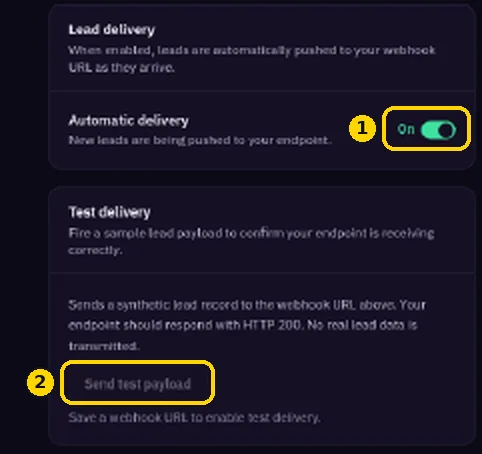
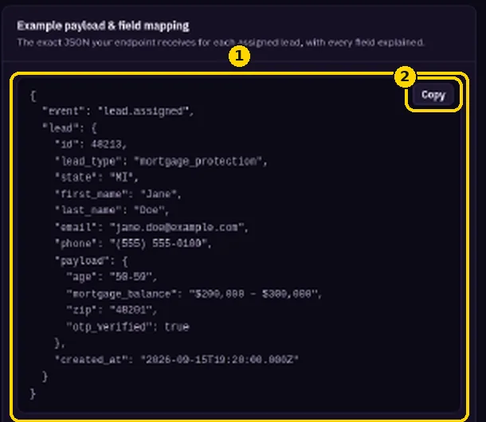

Sending Leads to Your CRM by Webhook
Automatically push every new lead into your CRM.
Fomo Leads can POST every lead to your CRM as JSON the moment it's assigned to you.
1. Get a webhook URL from your CRM
Create an automation with an inbound webhook trigger and copy its URL. In GoHighLevel, go to Automations → Create Workflow → Start from Scratch → Add New Trigger → Inbound Webhook.
2. Add it to Fomo Leads
- Go to https://members.fomoleads.io/integrations and find CRM Webhook.
- Paste the URL into Webhook URL and click Save.

- Make sure Automatic delivery is On.
- Click Send test payload. It's available once the URL is saved, and it sends a test event called
lead.test.

3. Map the fields
Real leads arrive with the event lead.assigned. The example payload on https://members.fomoleads.io/integrations shows every field. Map those fields to your CRM contact fields, then publish your workflow.
